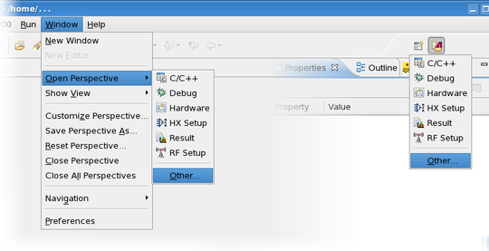
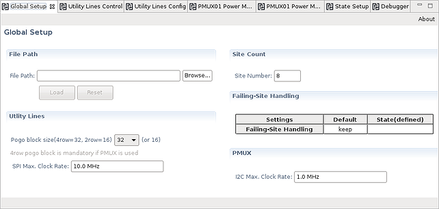

Opening the Routing Tools editors
The Routing Tools editors are available in the Routing Tools perspective.
About this task
This task shows how to open the Routing Tools editor perspective.
Before you begin
Make sure that SmartRDI and the RoutingToolsGUI for SmarTest are already installed.
Procedure
-
Click menu or click the Open Perspective button
 and select the Other... perspectives as shown
below.
and select the Other... perspectives as shown
below.

Results
You have opened the Routing Tools perspective. The default view is shown if the perspective has not been modified:

What to do next
Create or load an XML configuration file, fill in the configuration data and create your states as shown in Working with the Routing Tools editors.
Functional changes
- Introduced in SmarTest 7.4.4